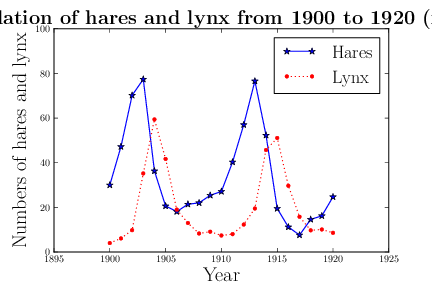

The population dynamics of a simple predator-prey system is a classical example shown in many biology textbooks when ecological systems are discussed. The system contains all elements of the scientific method, starting with an emphasis on
Most mammalian predators rely on a variety of prey, which complicates mathematical modeling; however, a few predators have become highly specialized and seek almost exclusively a single prey species. An example of this simplified predator-prey interaction is seen in Canadian northern forests, where the populations of the lynx and the snowshoe hare are intertwined in a life and death struggle.
One reason that this particular system has been so extensively studied is that the Hudson Bay company kept careful records of all furs from the early 1800s into the 1900s. The records for the furs collected by the Hudson Bay company showed distinct oscillations (approximately 12 year periods), suggesting that these species caused almost periodic fluctuations of each other's populations. The table here shows data from 1900 to 1920.
| Year | Hares (x1000) | Lynx (x1000) |
|---|---|---|
| 1900 | 30.0 | 4.0 |
| 1901 | 47.2 | 6.1 |
| 1902 | 70.2 | 9.8 |
| 1903 | 77.4 | 35.2 |
| 1904 | 36.3 | 59.4 |
| 1905 | 20.6 | 41.7 |
| 1906 | 18.1 | 19.0 |
| 1907 | 21.4 | 13.0 |
| 1908 | 22.0 | 8.3 |
| 1909 | 25.4 | 9.1 |
| 1910 | 27.1 | 7.4 |
| 1911 | 40.3 | 8.0 |
| 1912 | 57 | 12.3 |
| 1913 | 76.6 | 19.5 |
| 1914 | 52.3 | 45.7 |
| 1915 | 19.5 | 51.1 |
| 1916 | 11.2 | 29.7 |
| 1917 | 7.6 | 15.8 |
| 1918 | 14.6 | 9.7 |
| 1919 | 16.2 | 10.1 |
| 1920 | 24.7 | 8.6 |
The first step is to
from numpy import *
from pylab import *
from matplotlib import pyplot as plt
from matplotlib import rc, rcParams
import matplotlib.units as units
import matplotlib.ticker as ticker
import sys
import os
import numpy as np
rc('text',usetex=True)
title(r'{\bf Population of hares and lynx from 1900 to 1920 (x1000)}', fontsize=20)
# Load in data file
popdata = loadtxt("popdata.dat")
# Make arrays containing x-axis and hares and lynx populations
year = popdata[:,0]
hares = popdata[:,1]
lynx = popdata[:,2]
axis([1895,1925,0, 100.0])
# Put lables on axes
xlabel(r'Year',fontsize=20)
ylabel(r'Numbers of hares and lynx ',fontsize=20)
# Then plot
plt.plot(year, hares ,'b-*', year, lynx, 'r:.', markersize=7)
legend(('Hares','Lynx'),
'upper right', shadow=False, fancybox=False,prop={"size":18})
legend(loc='upper right')
savefig('popdata.pdf', format='pdf')
plt.show()
A very useful addendum here is to provide the students with information on how to use ipython notebook. Handing material in this format, will allow students to make their own electronic notebooks, change the text, add, improve upon, do exercises etc etc.

We see from the plot that there are indeed fluctuations.
We would like to create a mathematical model that explains these population fluctuations. Ecologists have predicted that in a simple predator-prey system that a rise in prey population is followed (with a lag) by a rise in the predator population. When the predator population is sufficiently high, then the prey population begins dropping. After the prey population falls, then the predator population falls, which allows the prey population to recover and completes one cycle of this interaction. Thus, we see that qualitatively oscillations occur. Can a mathematical model predict this? What causes cycles to slow or speed up? What affects the amplitude of the oscillation or do you expect to see the oscillations damp to a stable equilibrium? The models tend to ignore factors like climate and other complicating factors. How significant are these?
With the rates by which the populations of hares and lynx change, we can now start modeling their interactions.
For the time development of the lynx population, we assume that the primary growth for the lynx population depends on sufficient food for raising lynx kittens, which implies an adequate source of nutrients from predation on hares. Thus, the growth of the lynx population is similar to the death rate for the hare population with a different constant of proportionality. We model this as an interaction between hares and lynx as $$ \frac{L(t+\Delta t)-L(t)}{\Delta t}=\gamma L(t)H(t), $$ where \( \gamma \) is a constant to be determined. We assume that the primary loss of lynx is due to declines in their own population, leading then to the following growth rate $$ \frac{L(t+\Delta t)-L(t)}{\Delta t}=\gamma L(t)H(t)-\delta L(t), $$ with \( \delta \) being another constant to be determined.
In summary we have the initial conditions $$ H(t=0) = 30, $$ and $$ L(t=0) = 4, $$ and the following two coupled equations $$ \frac{H(t+\Delta t)-H(t)}{\Delta t}=\alpha H(t)-\beta H(t)L(t), $$ and $$ \frac{L(t+\Delta t)-L(t)}{\Delta t}=\gamma L(t)H(t)-\delta L(t). $$ These equations have four parameters \( \alpha\beta\gamma\delta \) which encompass complicated dynamics between the species and the environment. In the first stage, the students should be given values for these parameters, with an explanation that at a later stage we will show them how to determine these parameters.
If we perform a least-square fitting, we can find optimal values for the parameters \( \alpha\beta\gamma\delta \). Here we will simply use these parameters and write a simple program which solves the two equations. The optimal parameters are \( \alpha=0.4807 \), \( \beta=0.02482 \), \( \gamma=0.9272 \) and \( \delta=0.02756 \). These parameters result in aslightly modified initial conditions, namely \( H(0) = 34.91 \) and \( L(0)=3.857 \). With these parameters we are now ready to solve the equations and plot these data together with the 'experimental' values.
from numpy import *
from pylab import *
from matplotlib import pyplot as plt
from matplotlib import rc, rcParams
import matplotlib.units as units
import matplotlib.ticker as ticker
import sys
import os
# Define function to solve the difference equations
def SolveEquations(year, NumHares, NumLynx, InitialTime, FinalTime, n):
# Hardcoding of least-square optimized parameters
a, b, c, d = 0.4807, 0.02482, 0.9272, 0.02756
# Step size, redundant here since step is equal to 1 yr
# h = (FinalTime-InitialTime)/n
# Solve the difference equations (no time step here)
for i in range(1, n):
NumHares[i] = NumHares[i-1]+a*NumHares[i-1]-b*NumHares[i-1]*NumLynx[i-1]
NumLynx[i] = NumLynx[i-1]-c*NumLynx[i-1]+d*NumHares[i-1]*NumLynx[i-1]
print "%6.3f %6.3f %6.3f" % (year[i],NumHares[i],NumLynx[i])
# we read the data needed to plot the experimental values
rc('text',usetex=True)
title(r'{\bf Population of hares and lynx from 1900 to 1920 (x1000)}', fontsize=20)
# Load in data file
popdata = loadtxt("popdata.dat")
# Make arrays containing x-axis and hares and lynx populations
year = popdata[:,0]
hares = popdata[:,1]
lynx = popdata[:,2]
# Set up numerical data, first find the amount of data points
n = len(popdata[:,0])
# Initialize array of hares and lynx computed numerically, all zero
NumHares = zeros(n)
NumLynx = zeros(n)
# Then define the initial values from least-square fit
NumHares[0], NumLynx[0] = 34.91, 3.857
# Define initial time and final time and time step
InitialTime = year[0]
FinalTime = year[n-1]
# Solve the equations
SolveEquations(year, NumHares, NumLynx, InitialTime, FinalTime, n)
axis([1895,1925,0, 100.0])
# Put lables on axes
xlabel(r'Year',fontsize=20)
ylabel(r'Numbers of hares and lynx ',fontsize=20)
# Then plot
plt.plot(year, hares ,'b-*', year, lynx, 'r:.', year, NumHares, 'm:v', year, NumLynx, 'k--', markersize=7)
legend(('Hares','Lynx','NumHares', 'NumLynx'),
'upper right', shadow=False, fancybox=False,prop={"size":18})
legend(loc='upper right')
savefig('popnumdata.pdf', format='pdf')
plt.show()
There is still a small error, most likely the step length is too high, leading to not a number. Needs to be checked.